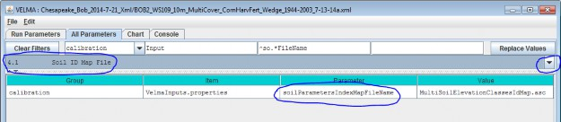
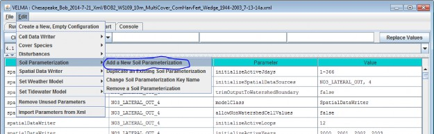
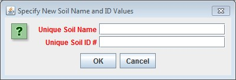
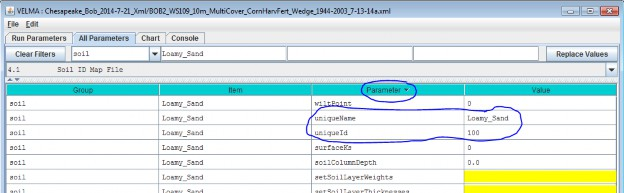
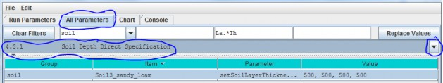
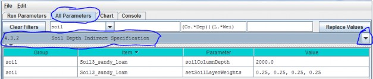
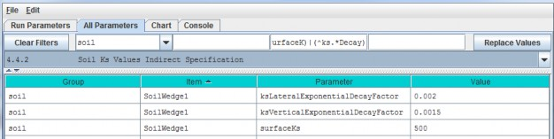
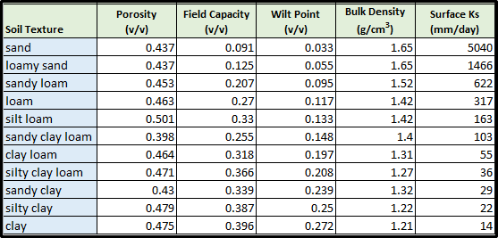
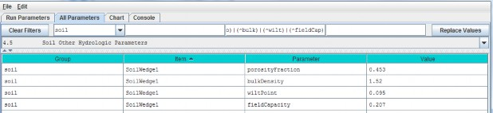
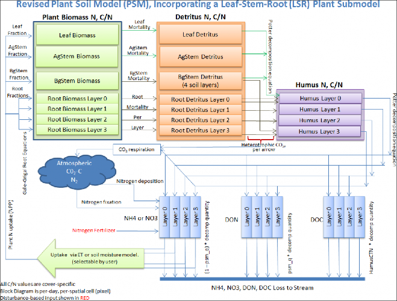

Soil Types
VELMA requires information on key soil properties affecting hydrological and biogeochemical processes within astudy watershed. Whether single or multiple soil types are modeled within a watershed, you will need toestablish a soil type map and specify parameter values for a set of soil properties associated with each soiltype. The following steps will accomplish this:
- Establish a soil ID map describing the assignment of soil type IDs for every cell within the delineatedwatershed. See section 4.1 for details.
- Specify soil ID parameter names and values corresponding to those appearing in the soil ID map. See section 4.2for details.
- Specify soil depth values for the entire soil column and for each of four soil layers within the column. Seesection 4.3 for details.
- Specify soil hydraulic conductivity values controlling infiltration rate (Ks), and depth dependent changes invertical and lateral macropore flow, Ksv and Ksl, respectively. See section 4.4 for details.
4.1 - Soil ID Map File
The Soil ID Map File is specified by the soilParametersIndexMapFileName parameter. You can view and set itby selecting "4.1 Soil ID Map File" in the All Parameters outline drop-down selector:

Parameter Definitions
| Parameter Name | Parameter Description |
|---|---|
| soilParametersIndexMapFileName | The file name of a spatial-explicit map of Soil Parameters uniqueIds. The data in this map file specifies the Soil Parameterization of a given pixel in the DEMmap. |
The file specified for the soilParametersIndexMapFileName is assumed to be a Grid ASCII (".asc") map filewith the same row and column dimensions as the simulation configuration's DEM file. Its contents should be integer values. Each cell's integer value should be the ID number of a soiltype.
Suppose the specified soil index map file contains three distinct integers for this map: 100, 105 and 110. TheVELMA simulation will expect the simulation configuration to include 3 soil parameterizations.
4.2 - Soil IDs and Names
Adding a Soil Parameterization to a simulation configuration using the following steps. Click the Edit Soil Parameterizations "Add a New Soil Parameterization" menu item:

Clicking "Add a New Soil Parameterization" opens the Soil Parameterization Name and ID dialog which looks likethis:

Enter a name and ID number for your new Soil Parameterization.
The name must be unique (i.e. no other Soil Parameterization already specified for this simulation configurationcan share the name you specify) and we recommend avoiding whitespace and punctuation characters (e.g. "(" and")") apart from the underbar ("_") character, which can be used instead of whitespace.
The ID number must be an integer, not already specified for any existing Soil Parameterization, and must matchone of the integers that appears in the Soil ID Map File.
As an example: Suppose we are adding the first Soil Parameterization ("100") for the hypothetical Soil ID MapFile mentioned above, and that ID "100" identifies cells that contain loamy sand.
Acceptable names (it's guaranteed unique because it's the first Soil Parameterization we're adding) might be:"Loamy_Sand" or "Soil_100_LoamySand", or something similar.
However, the only acceptable ID value is "100" - because the Unique Soil ID # of this parameterization is whatkeys it to those particular cells in the Soil ID Map File.
Once you've entered valid name and ID values in the Name and ID dialog, click the OK button. When you click OK,the VELMA GUI adds a new Soil Parameterization to the simulation configuration, and sets the All Parameterstab's filters to display only the parameters of the newly-added Soil Parameterization. Assuming we named our newSoil Parameterization "Loamy_Sand", with ID = "100", this is what the All Parameters tab would look like afterclicking OK:

We did one other thing to get the above display: notice that the "Parameter" column is circled, and has a"down-arrow" indicating "descending-sort". After clicking OK to add the new Soil Parameterization, we clickedthe "Parameter" header field (twice), which sorts the table of properties on that column.
Now go to All Parameters 4.3 and 4.4 where parameter values for each soil name/ID will need to bespecified for total soil column depth, thickness of each of four soil layers, and hydrologic parametersaffecting vertical and lateral flow.
4.3 - Soil Depth Values
There are two methods, direct or indirect, that can be used to specify soil layer depths. The direct and indirectmethods have their own distinct set of parameters that are available to each soil type specified for a givensimulation configuration. Each method has its advantages. Thus, it is up to the user to decide which one to use.Either the direct or indirect set of parameters can be applied to a specified soil type, independent of whichset is applied in other specified soil types.
4.3.1 - Soil Depth Direct Specification
The direct method (optional) for setting a soil type's layer thicknesses uses a comma-separated list of valuesfor the setSoilLayerThicknesses parameter in millimeters for of each of 4 soil layers. For example:"500, 500, 500, 1500" (without the quote-marks) specifies the soil type's 4
layers as being 500 mm, 500 mm 500 mm, and 1500 mm thick, from layer 1 to layer 4, respectively.

Parameter Definitions
| Parameter Name | Parameter Description |
|---|---|
| setSoilLayerThicknesses | A comma-separated list of values specifying the thickness of each soil layer in millimeters. For example: "500 750 1000 1500" (without the quote-marks) specifiesthe soil's 4 layers as being 500 mm 750 mm 1000 mm and 1500 mm thick from layer 1 to layer 4 respectively.NOTE: This list of values may be left unspecified. When setSoilLayerThickness is unspecified thesoil's layer thicknesses are set by the combination of the soilColumnDepth and setSoilLayerWeightsparameters. When setSoilLayerThickness is specified the soilColumnDepth and setSoilLayerWeightsparameters are ignored. |
Thus, for the direct method, VELMA internally calculates the value for the soilColumnDepth parameter fromthe setSoilLayerThicknesses values specified for layers 1, 2, 3 and 4. When setSoilLayerThicknessesis not specified (left blank), the indirect method must be used to specify the soil layer thicknesses andsoil column depth (see All Parameters 4.32).
4.3.2 - Soil Depth Indirect Specification
As an alternative to the direct method described under All Parameters 4.31, you can instead use theindirect method for specifying a soil type's total soil column depth (parameter = soilColumnDepth, inmillimeters) and soil layer depth (parameter = setSoilLayerWeights, which is equal to the fraction "soillayer thickness / soil column depth".

In this example the soil type named "SoilWedge1" has soilColumnDepth = 2000 mm, and setSoilLayerWeights= 0.25, 0.25, 0.25, 0.25 for layers 1, 2, 3 and 4, respectively. VELMA uses these values during asimulation to compute each soil layer's thickness (in millimeters) as:
layerThickness[iLayer] = soilColumnDepth * soilLayerWeight[iLayer].
Thus, the parameter values shown in the above example translate to soil layer thicknesses of 500 mm, 500 mm, 500mm, and 500 mm for each layer.
When setColumnDepth and setSoilLayerWeights are not specified (left blank), the direct method mustbe used to specify the soil layer thicknesses and soil column depth (see All Parameters 4.31).
4.4 - Soil Ks Values
VELMA simulates vertical and lateral water drainage using a logistic function that is intended to capture thebreakthrough characteristics of soil water movement. The logistic function provides a simple way (3 parameters)to capture the fast "switching" from low to high flow as water storage within a soil layer approaches fieldcapacity. VELMA offers two alternative methods, direct or indirect, for specifying these parameters. However,because the direct method is still under development, we recommend that users use the indirect method (see All Parameters 4.4.2).
4.4.1 - Soil Ks Values Direct Specification
Under development - please use the indirect method described in the next section.
4.4.2 - Soil Ks Values Indirect Specification
We refer to this method as an "indirect" because VELMA internally uses the specified soil Ks parametervalues to calculate the actual soil lateral and vertical hydraulic conductivity (Ks) values used during thesimulation run. You must specify values for 3 parameters for each soil type (in this example, "SoilWedge1"refers to a particular soil type / map unit).

Parameter Definitions
| Parameter Name | Parameter Description |
|---|---|
| surfaceKs | saturated hydraulic conductivity (Ks, mm/day) at the soil surface. For equations and parameterization information see Appendix 6.1 (Abdelnour et al.2011). |
| ksVerticalExponentialDecayFactor | vertical Ks exponential decay factor (unitless)controlling the rate of decrease in vertical flow with depth. For equations and parameterization information see Appendix 6.1 (Abdelnour et al. 2011). |
| ksLateralExponentialDecayFactor | lateral Ks exponential decay factor (unitless) controlling the exponential rate of decrease in lateral flow with depth. . For equations and parameterization information see Appendix 6.1 (Abdelnour et al. 2011). |
Calibration Notes
As a starting point, we recommend using the texture-specific values listed inTable 1 for "Surface Ks" and other physical characteristics of soil. Note that all the values in Table 1can vary significantly as a result of compaction, presence of hard pans, and other factors.
Based on the parameter values specified, VELMA computes the Ks lateral and Ks vertical flows (mm/day) per eachsoil layer as
ksLateral[ilayer] = surfaceKs * e^{ ksLateralExponentialDecayFactor * \sum{layers[iLayer]*0.5} }
ksVertial[ilayer] = surfaceKs * e^{ ksVerticalExponentialDecayFactor * \sum{layers[iLayer]*0.5} }
Iterative calibration of the user-specified parameter values is generally required to obtain a good fit betweensimulated and observed stream discharge (mm/day) at the watershed outlet. At the end of each simulation, VELMAcalculates a Nash-Sutcliffe efficiency coefficient to assess the goodness-of-fit and reports the results in asimulation output file named "NashSutcliffeCoefficients.txt".See Nash-Sutcliffe wikipedia
for a general overview of the Nash-Sutcliffe efficiency coefficient and its application. Quoting that website:
"Nash-Sutcliffe efficiencies can range from -∞ to 1. An efficiency of 1 (E = 1) corresponds to a perfect match ofmodeled discharge to the observed data. An efficiency of 0 (E = 0) indicates that the model predictions are asaccurate as the mean of the observed data, whereas an efficiency less than zero (E < 0) occurs when theobserved mean is a better predictor than the model."
In general, a Nash-Sutcliffe coefficient of 0.7 is considered a good fit between simulated and observeddischarge. A value of 0.8 or greater is excellent, particularly for spatially-distributed ecohydrological modelslike VELMA that simulate the processes and flow paths by which water arrives at the watershed outlet (empiricalmodels do not have this requirement).
Advanced users can consult Appendix 6.1 (Abdelnour et al. 2011) for additional details concerning soil Ks equations, parameters and calibration.
4.5 - Soil Other Hydrologic Parameters
VELMA simulates the effect of several soil physical properties on water retention, rates of drainage and otherhydrological processes. These physical properties and their associated parameter names are
- Soil porosity (parameter name = porosityFraction): the fraction of void space (v/v) in a soil.
- Soil field capacity (parameter name = fieldCapacity): the amount of soil moisture (v/v) held insoil after excess water has drained away and the rate of downward movement has materially decreased
- Wilt Point (parameter name = wiltPoint): the minimal point of soil moisture (v/v) the plantrequires not to wilt.
- Bulk density (parameter name = bulkDensity): the dry weight of soil per unit volume of soil(g/cm3).
The following table provides typical values for these parameters for 11 soil texture classes(surface Ks, described above in All Parameters 4.4, is included here as well). The values listedare offered here as a starting point for model initialization. However, users should be aware thatthese values can vary dramatically as a result of compaction, presence of hard pans, and otherfactors.
Table 1. Physical characteristics of major soil texture classes (Pan et al. 2009, VELMA v1.0 user manual)

For each soil type in a watershed (we recommend just one texture type per soil type / mapping unit), you willneed to specify values for porosity, field capacity, wilt point and bulk density.
Use the All Parameters drop-down menu to select "4.5 Soil Other Hydrologic Parameters (only one of six soil typesis shown in the truncated screenshot below):

IMPORTANT INFORMATION FOR SECTIONS 5.0 - 25.0 OF THE ALL PARAMETERS TOC
VELMA version 2.0 simulates plant biomass and detritus much differently than VELMA version 1.0. Version 1.0 useda simplified Plant Soil Model (PSM, Stieglitz et al. 2006) to simulate plant biomass in each cell in aggregate -that is, leaves, stems and roots were lumped together in a single biomass pool (Abdelnour et al. 2011). Thislumped approach greatly simplified the structure and application of the model. Version 1.0 successfullysimulates important aspects of catchment hydrology and biogeochemistry (e.g., Abdelnour et al. 2011, 2013), butit does not simulate effects associated with phenological changes and disturbances that disproportionatelyaffect specific plant tissues - for example, leaf growth and senescence, defoliation events, selective removalof high or low C/N tissues via harvest or grazing, etc. These effects can have important implications forassessments involving water quality and quantity, carbon sequestration and other ecosystem services.
To address such effects, VELMA version 2.0 simulates nitrogen pools and fluxes for four plant tissue types:leaves, aboveground stems, belowground stems (>2 mm diameter), and fine roots (< 2 mm
diameter). This new Leaf-Stem-Root (LSR) submodel includes live (biomass) and dead (detritus) pools for each ofthe four plant tissue types.
A carbon/nitrogen (C/N) ratio must be specified for each plant tissue type so that VELMA can estimate carbonpools and fluxes corresponding to modeled nitrogen pools and fluxes. Although the model parameterization allowsdifferent C/N values for the biomass and detritus pools of the same tissue type, at present, the plant biomassand detritus pools for each tissue type must have the same C/N ratio to maintain mass balance of C and N pools.Specification of distinct C/N ratios per tissue type will be addressed in future versions.
Several other features have been built into the LSR submodel.
- A new nonlinear mortality subroutine simulates the loss of live plant biomass to detritus for all four tissues. See All Parameters section 12.0 for details. This replaces the mortality subroutine in VELMA version 1.0 described in Appendix 1, section A1.2.3.
- A modified version of the decomposition subroutine of Potter et al. (1993) is used to decompose detritus (leaf, stem and root) to humus (unidentifiable dead material). See All Parameters section 13.0 for details. This replaces the decomposition subroutine in VELMA version 1.0 described inAppendix 1, section A1.2.
- The "ET recovery" subroutine (Abdelnour et al. 2011) has been revised to use leaf biomass, rather than stand age, to simulate effects of forest regrowth on ET and streamflow. This subroutine can be applied to any cover type. See All Parameters section 13.0 for details. This replaces the decomposition subroutine in VELMA version 1.0 described in Appendix 6.2, section B2.
- A new subroutine describing age-related declines in transpiration of forest stands has been added. Abovegroundplant biomass is used as a proxy for stand age. See All Parameters section 10.3 for details.
The figure on the next page illustrates the structure of the new LSR submodel and its integration into theoverall Plant Soil Model. Additional Details on the LSR model structure, equations and parameterscan be found in "Appendix 1: Overview of VELMA'sLeaf-Stem-Root (LSR) Plant Biomass Submodel". We recommend reviewing this material before proceeding further, focusing on the LSR model structureand equations describing the various LSR nitrogen and carbon pools and fluxes.
Figure 1.

The User Manual package includes slides for a seminar describing the effectiveness of riparian buffers for protecting water quality in the Chesapeake Bay.
Filename: McKane_VELMA overview_OSU 2April2014_final.pptx Folder location: VELMAModel\Supporting Documents\VELMA Pubs & Talks